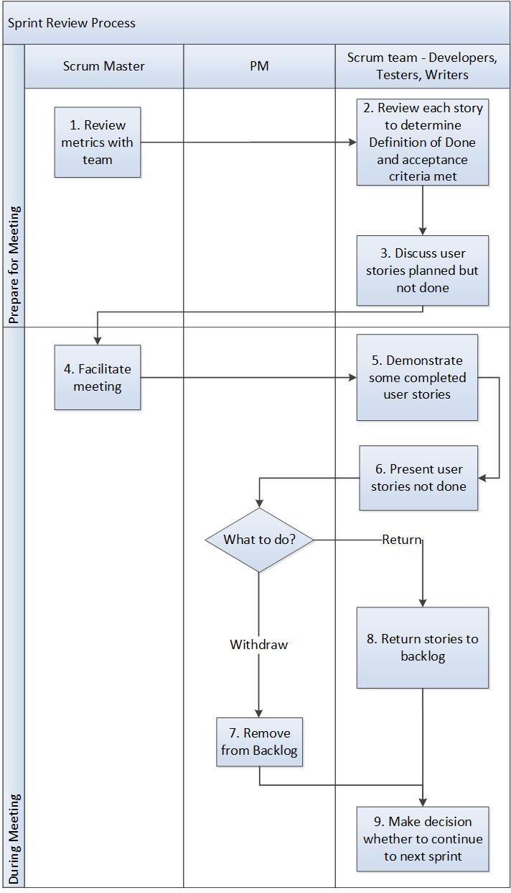

Sprint Review Process¶
This process explains how to prepare for the sprint review meeting and what to do during the meeting.
Entry Criteria |
A sprint has ended. |
Inputs |
|
Exit Criteria |
A decision to continue to the next sprint, cancel the project, or release now has been made. All user Stories in the sprint are either marked as done, accepted, returned to the backlog, or removed from the release. |
Outputs |
|
Note: Stories may be accepted after the Sprint Review. But they must be done at the end of the Sprint Review.
Activities¶

Step # |
Activity Name |
Description |
|---|---|---|
1 |
Review metrics with team |
The Scrum Master reviews metrics with the team such as the burndown chart, velocity, defects found and fixed and validated, and test results.
|
2 |
Review each story to determine if Definition of Done and acceptance criteria are met |
Using the Definition of Done decided at the beginning of the project, team members review each user story from the sprint to determine if the Definition of Done and acceptance criteria were met. |
3 |
Discuss stories planned but not done |
The team prepares to discuss user stories that were planned, but not done. |
4 |
Facilitate review meeting |
The Scrum Master facilitates the review meeting. The Scrum Master documents actions and risks as they arise. The purpose of the review meeting is to review the accomplishments of the sprint, not to validate individual completed user stories. |
5 |
Demonstrate some completed user stories |
For some of the stories completed during the sprint, team members demonstrate that the acceptance criteria in the story was met. Team members should not spend a lot of time preparing for the demonstration, it does not need to be elaborate. |
6 |
Present Stories not done |
For stories not completed, the Scrum Team members discuss why the story was not completed and what should be done with it. Scrum Team members discuss risks, what worked and what was more complex than anticipated. The PLM must decide what to do with stories that were not done. |
7 |
Remove from backlog |
For Stories not completed, the PLM may decide to cancel the story and remove it from the backlog. |
8 |
Return Stories to backlog |
Stories not completed are returned to backlog and prioritized. |
9 |
Make decision whether to continue to next sprint |
At the end of the sprint review, the team members make decision whether to continue to next sprint. If the PM feels the product is complete, the team can release the product, eliminating any further sprints. The program may also be canceled and not proceed to ship a product. |
Change Log¶
Date |
Change Request ID |
Version |
Change By |
Description |
05/21/2020 |
N/A |
0.1 |
Shree Vidya Jayaraman |
Initial Draft |
06/18/2020 |
N/A |
0.2 |
Shree Vidya Jayaraman |
Updated based on Doina and Rodger’s feedback |
06/22/2020 |
N/A |
0.3 |
Shree Vidya Jayaraman |
Updated based on Doina and Rodger’s feedback |